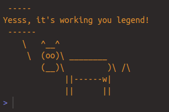

There seems to be a subconscious deterrent from using specialised tools like R as part of a production or core tech stack, as if it’s somehow not compatible with other forms of technology.
Which is clealy BS. Over the past year a suprising number of my projects have involved ways to package and integrate complex R code into an existing application.
There are many ways to do this, but few are as convincing and uncontroversial as using Docker.
This guide will walk through how to use Docker to bridge the gap between R and the rest of the world, enabling you to leverage R’s power while maintaining the portability, scalability, and consistency required in modern environments.
Why Combine R and Docker?
Docker addresses these challenges by containerizing applications along with their dependencies, ensuring that they run consistently across environments. For R, this means you can create a portable, self-contained environment that includes your scripts, libraries, and configurations—all packaged in a lightweight container.
Integrating R with Docker in 3 steps
If you need to, go ahead and install Docker first.
You can replicate the below steps by cloning the companion Github Repository.
1. Set Up Your R Environment
Before diving into Docker, start by setting up your R project. Ensure that:
Your scripts are modular and well-organized. Below we have a basic setup where the script or code you want to run is in the
app.Rfile.Dependencies are explicitly listed. I suggesting using
{renv}, its good practice in general but it also makes installing the required packages a lot easier later on when we write our Dockerfile.
Example or a bare-minimum directory structure:
my-r-project/
│
├── R/ # other R scripts or function
├── data/ # Data files (if applicable)
├── Dockerfile # Docker configuration file
├── renv.lock # Dependency file
├── app.R # Entry point
└── README.md # Documentation 2. Write a Dockerfile for Your R Project
The Dockerfile defines the environment for your R application. Here’s a basic example:
# Use the official R base image
FROM rocker/r-ver:4.3.1
# Install system dependencies (if needed)
RUN apt-get update && apt-get install -y \
libcurl4-openssl-dev \
libssl-dev \
libxml2-dev \
&& rm -rf /var/lib/apt/lists/*
# Set the working directory
WORKDIR /usr/src/app
# Copy your project files
COPY . .
# Install R dependencies
RUN Rscript -e "install.packages('renv')"
RUN Rscript -e "renv::restore()"
# Define the entry point
CMD ["Rscript", "app.R"] Key Notes on This Dockerfile:
- Base Image: We use the
rocker/r-verimage, which is optimized for R and maintained here.
- System Dependencies: Add system-level dependencies your R packages might require.
- Install R packages: Notice how we are replying on
renv’s automated package restoration?
3. Build and Run the Docker Container
Build the container:
docker build -t my-r-project . Run the container:
docker run my-r-project 
Advanced Use Cases with Docker and R
If you are doing serious work, you will likely want to move past cute ASCII art. In these cases you should invest a little more time into ensuring your R workflow is fit for purpose. Here are some resources to help go to the next level:
If you want an easy guide to writing better, production quality R code check out my e-book.
In particular, if you want to deploy a predictive model endpoint I cover this in the following case study.
For a simple example of deploying R as a shiny app using a base Docker image check this repo out.
You can even set up your own development environment using Docker. Just follow these steps.
Final Thoughts
This approach ultimately enhances collaboration between data science and engineering teams and empowers data scientists to use the tools they are most productive with, without sacrificing reliability and portability.
For teams looking to modernize their data science infrastructure, starting with Docker and R is a practical and transformative step.
Want to read more? Sign up to my mailing list here for weekly emails and no spam.
Looking for a data science consultant? Feel free to get in touch here